Wireless Links
Introduction to Wireless Technologies
Wireless communication technologies actually predate the Internet. In the 1880s, the photophone (Bell and Tainter) attempted to send data wireless using a light beam. In the 1890s, the wireless telegraph (Marconi) attempted to send data using radio waves. Also in the 1890s, experiments with millimeter waves (Bose) were attempted, and today, millimeter wave is becoming an active area of research again.
Conceptually, you might imagine that wireless communication consists of invisible particles traveling along an imaginary link from point A to point B, but that’s not actually very accurate. In reality, wireless communication is more like ripples on a pond. When you transmit data wirelessly, you create ripples that propagate outward and weaken over distance. If others are also transmitting data, the ripples can constructively and destructively interfere with each. The ripples can also reflect or refract against objects like boats on the pond, or the edge of the pond.
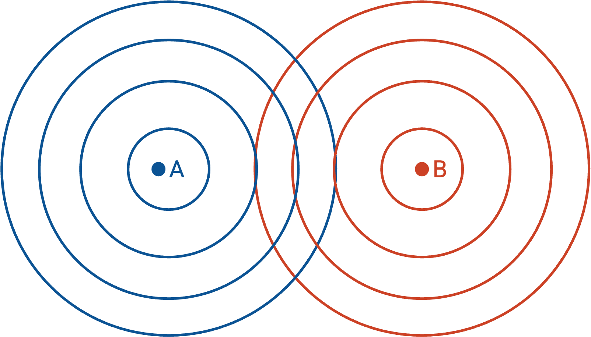
In this section, we’ll look at four key differences between wired and wireless communications. The differences mostly affect Layer 1 (physical) and Layer 2 (link), with a few exceptions that we’ll look at elater (notably, breaking the end-to-end principle and implementing reliability at Layer 2 for performance).
Difference 1: Wireless is a fundamentally shared medium. Wired is not.
Difference 2: Wireless signals get weaker over longer distances. Wired signals do not.
Difference 3: Wireless environments can change rapidly. Wired environments do not.
Difference 4: Packet collisions are much harder to detect in wireless systems.
Difference: Wireless is a Shared Medium
Difference 1: Wireless is a fundamentally shared medium. Wired is not.
Wired links are private (point-to-point) by default. Intuitively, a wire connects two devices. Creating a multi-point bus, where a single wire is connected to many devices, requires extra work. It’s difficult for external signals to interfere with the signal on the wire (e.g. we can wrap a shield around the wire). Along the wire, we use electrical signals to transmit data (e.g. high voltage is 1, low voltage is 0).
Wireless links have the opposite properties. By default, wireless links are shared. Intuitively, if you transmit a signal, the signal radiates outwards in all directions. Creating a private point-to-point link between two hosts requires extra work. It’s difficult to shield a signal from external interference. Instead of electrical signals, we encode bits using radio waves to transmit data.
Encoding Data over Wireless Link
How do we encode data into electromagnetic waves at Layer 1? We could just take our sequence of 1s and 0s and draw it as a wave, but the resulting wave is probably low-frequency, and it turns out a low-frequency signal is weak and difficult to transmit.
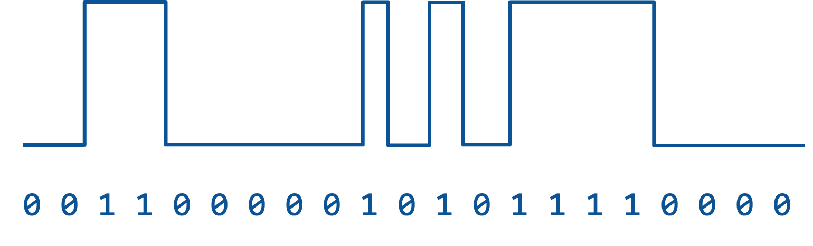
Instead, we have to use modulation to transmit our data. We start with the carrier signal, which is just a constant-frequency wave (e.g. a sine wave). This wave carries no information, but it’s high-frequency, so it’s much easier to transmit. Then, we impose our data signal (also called the modulation signal) on top of the carrier signal. The resulting wave is high-frequency (easy to transmit), and also contains the data we want to send! Note that the receiver will need to take the modulated waveform and re-extract the 1s and 0s out of that waveform.
There are several strategies for modulating our data signal on top of the carrier signal. In amplitude modulation (AM), we vary the height of the carrier signal based on the input signal. To transmit a 1, make the sine wave tall, and to transmit a 0, make the sine wave short. In frequency modulation (FM), we vary the frequency (width) of the carrier signal based on the input signal. To transmit a 1, make the sine wave skinny (higher-frequency), and to transmit a 0, make the sine wave fat (lower-frequency). Other more complex modulation strategies exist, such as phase modulation, or a combination of amplitude and phase modulation.
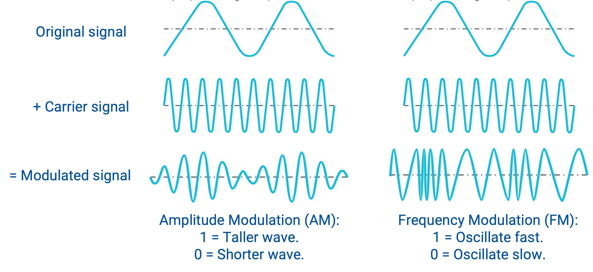
Noise and Interference
Because wireless is a shared medium, we need to deal with noise and interference, which can corrupt the received signal. Noise always exists, even if nobody else nearby is transmitting data. (As an analogy, even if nobody around you is talking, there’s still ambient noise from nature.) This ambient background noise is called the noise floor. By contrast, interference refers to other transmitters intentionally sending signals that interfere with our signal.
SINR (Signal to Interference and Noise Ratio) is a metric we can use to measure the quality of a wireless connection at the receiver. As the name implies, SINR is the power of the signal, divided by the power of the interference plus noise.
\[\text{SINR} = \frac{P_\text{signal}}{P_\text{interference} + P_\text{noise}}\]SINR is a dimensionless quantity, since it’s a ratio of two numbers. It can also be expressed in terms of decibels (dB), which is a logarithmic way to measure a ratio. At 0 dB, the ratio is 1, and when the SINR increases by 10 dB, the underlying ratio is 10 times greater (e.g. signal is 10 times more powerful, or noise/interference is 10 times weaker).
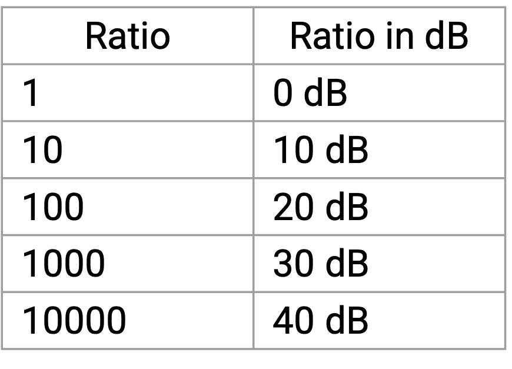
\[\text{SINR}_\text{dB} = 10 \cdot \log_{10}\left(\frac{P_\text{signal}}{P_\text{interference} + P_\text{noise}}\right)\]What does this equation tell us? It tells us that if there’s more noise, we have to transmit the signal with more power. It’s also possible to employ coding gain (think: error-correcting codes), so that even if the signal is weak and gets mixed in with noise and interference, we’re sending the signal with enough redundancy to allow the receiver to re-extract the signal.
The Shannon capacity gives us a theoretical limit on how much data per unit time we can send along a channel, given the amount of noise and interference along that channel. The equation works not just for wireless links, but also other types of links (e.g. wires).
\[C = B \cdot \log_2(1 + \text{SINR})\]In this equation, \(B\) is the bandwidth of the channel. \(\text{SINR}\) is the signal-to-interference-and-noise ratio. \(C\) is the theoretical limit of how much data per unit time we can send along this channel, measured in bits per second. Note that in this equation, bandwidth is measured as the difference between the highest frequency and the lowest frequency that the receiver understands.
What does this equation tell us? It tells us that as bandwidth increases, we can send more data per unit time. It also tells us that as the SINR increases (stronger signal, or less noise), we can send more data per unit time. If we need a link with a specific target capacity (e.g. 1 Mbps), we can plug in the physical characteristics of our link into this equation to see if our link meets the desired capacity.
As an example, consider the plain old telephone system. This system has 3 kHz bandwidth, which means that telephones understand frequencies between 300 Hz and 3300 Hz. Also, this system has a SINR of roughly 20 dB, which translates to a ratio of 100 (0 db = 1x, 10 dB = 10x, 20 dB = 100x, 30 dB = 1000x, etc.). Plugging these values into our equation, we get that \(C = 4000 \cdot \log_2(1 + 100) \approx 20000\), which tells us that the telephone system can transmit roughly 20 kbps (kilobits per second).
Difference: Attenuation
Wireless signals get significantly weaker over longer distances. By contrast, wired signals do get slightly weaker over distance, but the effect is far smaller. In wireless systems, our design must account for attenuating signals, whereas in wired systems, attenuation is usually not a key design concern.
This creates a fundamental trade-off when designing wireless systems. We want to maximize performance by making our link accurate, fast, and long-range. But, we also want to minimize our resource use by conserving energy (e.g. laptop power) and using less of the frequency spectrum (which can be expensive to reserve). Unfortunately, a better signal requires more power or more frequency bandwidth.
Free Space Model
One simple way to model signal attenuation is the free-space model (also known as the line-of-sight model), where we assume that the transmitter and receiver exist in a totally empty environment. Signals radiate outwards in all directions, with no obstacles (not even the Earth’s surface).
In this model, the power of the signal is inversely proportional to the distance between the transmitter and receiver. This is due to the inverse-square law:
\[P_r \propto \frac{P_t}{d^2}\]In this equation, \(P_r\) is the power at the receiver, \(P_t\) is the power at the transmitter, and \(d\) is the distance between the transmitter and receiver. If we double the distance, the signal at the receiver is \(1/4\) as strong. If the distance is 10 times larger, the signal at the receiver is \(1/100\) as strong.
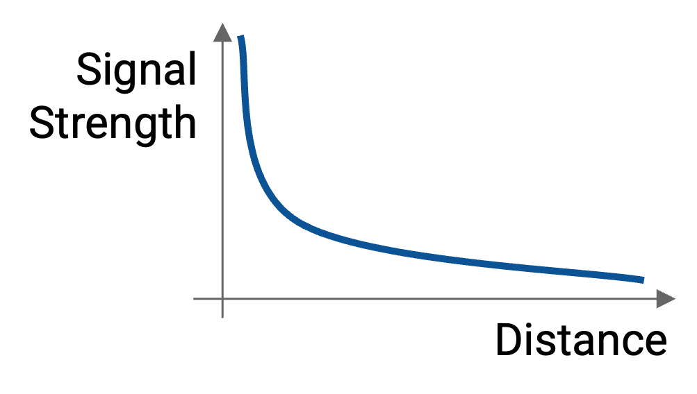
Intuitively, the inverse-square law applies here because the signal is radiating outwards in all directions. At any instant, the signal has radiated out to a sphere around the transmitter, and the sphere grows as the signal radiates further outwards. The surface area of a sphere with radius \(r\) is \(4\pi r^2\), so as the signal propagates out, it’s spread out over an area that grows quadratically (with the square of the distance). For exapmle, when the distance doubles, the resulting sphere has 4 times larger surface area. Therefore, the signal is spread out over an area that’s 4 times larger, so the signal is \(1/4\) as strong.
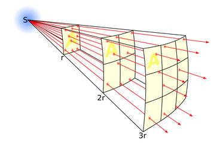
Besides the distance, we also need to consider the antennas being used by the transmitter and receiver. This leads us to the Friis equation for measuring signal strength across a distance:
\[\begin{align*} P_r &= P_t \cdot G_t \cdot G_r \cdot \left(\frac{\lambda^2}{4\pi}\right) \left(\frac{1}{4\pi d^2}\right) \\ &= P_t \cdot G_t \cdot G_r \cdot \left(\frac{\lambda}{4\pi d}\right)^2 \\ \end{align*}\]In this equation, as before, \(P_r\) is the power at the receiver, and \(P_t\) is the power at the transmitter. \(G_t\) is the gain at the transmitter, and \(G_r\) is the gain at the receiver. \(\lambda\) is the wavelength, and it’s used in this equation to represent the area of the antenna. \(d\) represents the distance between the antennas.
What does this equation tell us? To compute the signal strength at the receiver, we start with the signal strength at the transmitter, \(P_t\). Then, we multiply by the gains of the two antennas, \(G_t\) and \(G_r\). Intuitively, a higher gain means that the antenna is better at sending or receiving signals.
As we saw earlier, distance affects signal strength according to the inverse-square law, which explains the \(\frac{1}{4\pi d^2}\) term.
Finally, the \(\frac{\lambda^2}{4\pi}\) term relates to the aperture (think of it like area) of the receiver antenna. Intuitively, if you shine a light on a piece of paper, the light will hit that paper. If you use a larger sheet of paper, more light will hit the paper. The effective aperture (think: area) of the antenna can be computed as \(\frac{\lambda^2}{4\pi}\), though we won’t prove it here. Note that the \((4\pi)^2\) in the equation actually comes from two factors of \(4\pi\), one from the inverse-square law and one from the effective aperture equation.
% paper analogy from here: https://www.cdt21.com/design_guide/friis-equation-and-antenna-effective-area/#What_is_the_effective_area_of_an_antenna
We can also rewrite the Friis equation by dividing both sides by \(P_t\):
\[\frac{P_r}{P_t} = G_t \cdot G_r \cdot \left(\frac{\lambda}{4\pi d}\right)^2\]What does this equation tell us? The relative signal strength at the receiver (e.g. half as strong, or \(1/100\) as strong, as the signal strength at the transmitter) is a function of the antenna gains, the inverse of the square of the distance, and the effective aperture (think: area) of the antenna.
Yet another way to rewrite the same Friis equation is to take the log of both sides, allowing us to express the power and gain in terms of decibels:
\[P_r^\text{dB} = P_t^\text{dB} + G_t^\text{dB} + G_r^\text{dB} + 20 \log_{10} \left(\frac{\lambda}{4\pi d}\right)\]The free space model is a useful theoretical model to measure the ideal signal strength at the receiver, though in practice, physical obstacles (e.g. the Earth’s surface) prevent us from achieving this ideal value.
Link Budget
If signals get weaker over distance, how do we know if a link will actually work? In other words, how do we know if the receiver will actually detect an intelligible signal?
To measure if a link is viable, we can compute a link budget, which accounts for all gains and losses along the link.
\[P_r^\text{dB} = P_t^\text{dB} + \sum \text{gains} - \sum \text{losses}\]In this equation, \(P_r\) is the signal power at the receiver, and \(P_t\) is the signal power at the sender. All gains (e.g. a stronger antenna gain) add to our link budget, and all losses (e.g. path loss from long distance) cost us link budget.
Adding all gains and subtracting all losses tells us the signal strength at the receiver. We can compare this against the sensitivity of the receiver, which is the signal strength needed for the receiver to extract useful information. This comparison tells us our link budget. If the overall budget ends up positive, then this is a viable link, and we’re in the money. If the overall budget ends up negative, then this is not a viable link, and we’re in trouble.
Notice that the link budget is computed in decibels, which are logarithmic. This allows us to use addition and subtraction instead of multiplication and division. For example, a gain of 1000x power is represented by adding 30 decibels, and a loss down to 1% of power is represented by subtracting 20 decibels.
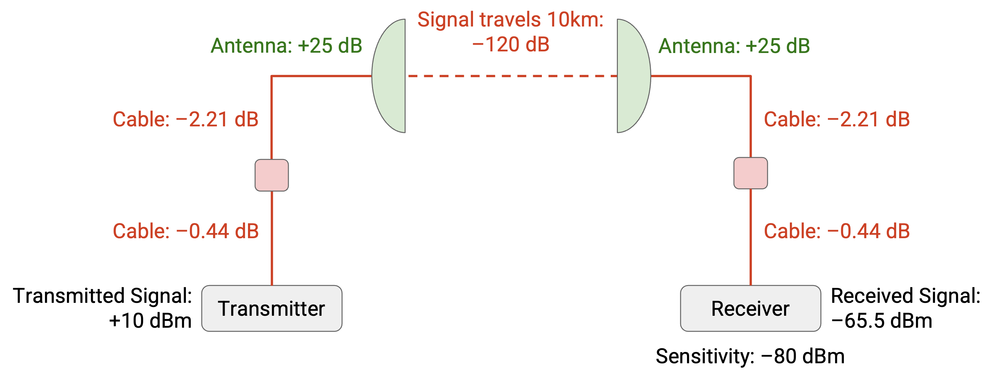
Here’s an example of computing the link budget. The signal power at the transmitter is 10 dB. The signal travels along a cable, a lightning arrestor (you don’t have to know what this is), and another cable, losing 0.44 dB, 0.1 dB, and 2.21 dB along the way. Then, the signal is broadcast on an antenna, which gives us a 25 dB increase. Then, the signal travels across 10 kilometers of space, losing 120 dB along the way. Then, the signal is received by an antenna, giving us a 25 dB increase. Then, the signal travels along some more cables, losing 0.44 dB, 0.1 dB, and 2.21 dB, before finally reaching the receiver. If we add up all the gains and subtract all the losses, we can compute that the signal strength at the receiver is -65.5 dB.
We can now compare this signal strength against the receiver sensitivity, which is -80 dB. This tells us that the receiver can pick up any signals above -80 dB. Since -65.5 dB is above -80 dB, our link budget is positive, and our link should work!
The link margin is the difference between the signal strength at the receiver, and the receiver sensitivity. If we received a 30 dB signal, and our sensitivity lets us detect anything over 10 dB, we have a link margin of 20 dB. In the example from before, our link margin was 14.5 dB.
The link margin tells us about the quality of our link. If the link margin is negative, the link won’t work, and the signals won’t be received. A higher link margin is good because it means our signal is more reliable and more robust to interference and other issues.
Difference: Environments Change
Wireless environments can change rapidly. The devices can move around. The environment could change (e.g. a physical obstacle moves in between the devices). Other communications could start interfering with our communication.
In the free-space model from earlier, we set the distance between the devices, \(d\), to be a constant. But what if the devices are moving? Also, we assumed there were no obstacles and no interfering signals in the environment. How does our model change in the presence of these factors?
In the free-space model, assuming the antennas stay the same (same gain, same aperture), we got a nice, smooth graph where signal strength decreased as distance increased. After accounting for a changing environment, the resulting graph of distance vs. signal strength is much more wobbly.
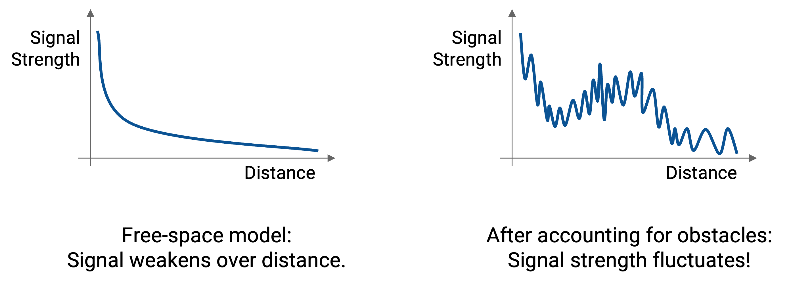
This graph is actually the sum of three smaller graphs. Each one shows how a different characteristic of the environment affects the signal strength, as a function of distance. Notice that some characteristics change slowly as distance increases, while others change rapidly and erratically as distance increases.
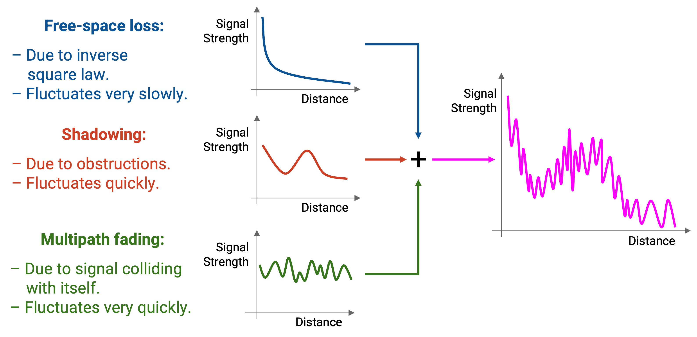
The first characteristic is free-space path loss. We’ve already seen this from the free-space model, which shows us that the signal strength decreases slowly and consistently over longer distances, according to the inverse-square loss.
The second characteristic is shadowing. This occurs when physical obstacles between the transmitter and the receiver block the signal. The signal must now be refracted or reflected to get around the obstacle, and the resulting signal at the receiver ends up weaker.
Depending on where the obstacles are located, the signal could get weaker or stronger as distance increases. For example, if I walk in front of a building, the signal will get a lot weaker, but if I eventually walk past the building, the signal might get stronger again.
The third characteristic is multipath fading. This occurs when waves reflect and refract on physical obstacles, which causes offset versions of the signal to arrive at the receiver. In particular, if a signal takes different paths of different lengths to reach the receiver, the signals might arrive out-of-phase with each other, causing interference.
Multipath fading can cause very fine-grained changes in the signal strength. Changing the distance just a little bit might cause the signal strength to get stronger or weaker.
Ultimately, if we want to consider how all three characteristics together affect signal strength over various distances, we have to look at the sum of the three graphs. If the sender and receiver stayed stationary, the signal strength would be a specific point on this graph. However, if the devices are moving, then the signal strength travels along this curve. Also, if the environment changes and obstacles enter and leave, then the graph itself would change as well.
Approximating Path Loss
It can be difficult to approximate path loss (from free-space loss, shadowing, and multipath fading). This is especially difficult in the presence of obstacles that result in a signal taking multiple paths, causing out-of-phase signals to interfere with each other at the receiver.
One relatively simple model for approximating path loss is the two-ray model. In this model, we assume that the signal travels along only two paths: one line-of-sight path directly from the sender to the receiver, and one ground-bounce path that reflects off the ground to the receiver. Remember, this is still one signal radiating from the transmitter, but some waves directly reach the receiver, while others bounce off the ground to the receiver.
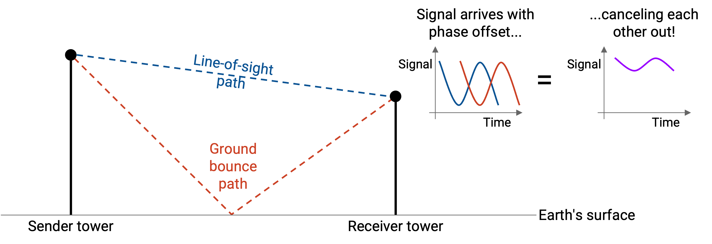
If the sender and receiver are far enough apart, the waves from the two paths will be 180 degrees out of phase. As a result, the waves from the two paths will destructively interfere and cancel out, significantly weakening the signal at the receiver. When this happens, the signal strength is no longer proportional to \(1/d^2\), but instead is proportional to \(1/d^4\). In other words, signal strength now falls off much faster as the distance increases.
Remember, our free-space model assumed no obstacles (not even Earth’s surface), which is why we derived that signal strength is proportional to \(1/d^2\). In the two-ray model, accounting for Earth’s surface causes signal strength to now be proportional to \(1/d^4\).
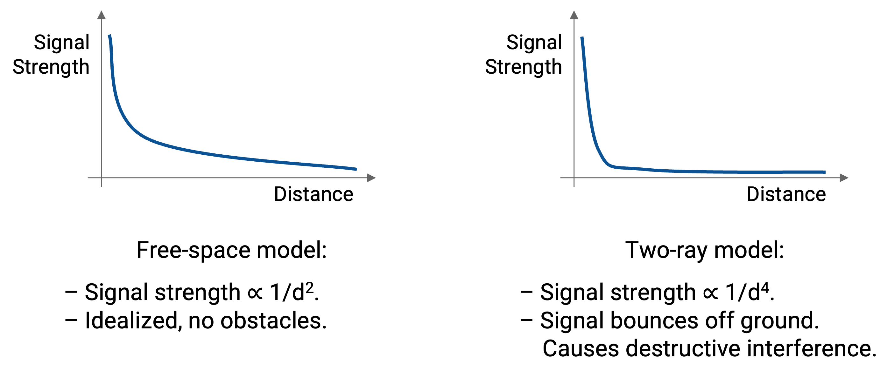
What if there are additional obstacles besides Earth’s surface? The two-ray model doesn’t account for those. In more complicated environments, we can create general ray tracing models, which account for signals being reflected, scattered, and diffracted. These models require specific information about the environment (e.g. where the obstacles are), and can be built using computer simulations. In these models, reflected versions of the signal usually dominate the signal, compared to the unobstructed line-of-sight version of the signal.
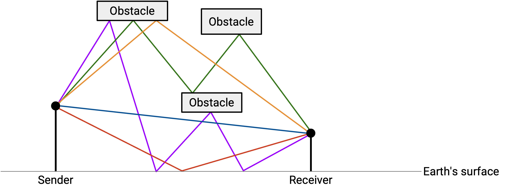
From these models, we can derive a simplified path loss model to relate distance and signal strength:
\[P_r = P_t K d^\gamma\]In this equation, as before, \(P_r\) and \(P_t\) represent the receiver signal power and the transmitter signal power, and \(d\) represents the distance.
\(K\) and \(\gamma\) are empirically-determined constants, based on the environment and the model. For example, if there are lots of inconveniently-placed obstacles, \(K\) might be really small, causing the receiver signal strength to be weak.
In practice, \(\gamma\) is between 2 and 8. In the best case, signal strength is proportional to \(1/d^2\), similar to the free space model. In the worst case, signal strength is proportional to \(1/d^8\), and the signal gets weaker much more rapidly as you move further away.
Difference: Detecting Collisions
Wired collisions are often easy to detect. On a point-to-point link, they might not happen at all. We can usually detect collisions just by sensing the wire. There can be issues with propagation delay, but ultimately, there’s just one signal on the wire that we have to sense.
By contrast, wireless collisions are much harder to detect, because there is now a spatial aspect to collisions. Waves might collide in one place, but not another.
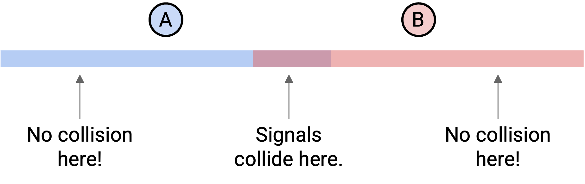
Designing collision detection and collision avoidance is much harder in a wireless system, but it’s still necessary so that multiple devices can send over the shared medium. Recall that there are many different approaches to multiple access, including fixed allocations of frequencies, and coordinating who’s sending at what times. Which approach works best depends on your environment. For example, if you’re in the middle of nowhere, it might be okay to just let collisions happen and deal with them when they do. In this section, though, we’ll focus on the CSMA (Carrier Sense Multiple Access) approach, where you listen for signals and don’t transmit if someone else is talking.
In this section, for simplicity, we’ll ignore obstacles, which means that signals radiate outwards in all directions. We’ll assume that signals radiate up until a certain distance at full-strength, and that signals are undetectable past that distance. Also, in our running examples, we’ll simplify and assume all devices are arranged in a line, so we just need to consider signals propagating left and right. Remember, though, in real life, signals radiate outwards in three dimensions.
Problems with CSMA
To check if someone else is talking, the radio tries to detect energy exceeding a certain threshold. If it does detect, then we conclude that somebody else is transmitting.
This strategy works fine if two well-separated pairs of devices are communicating.
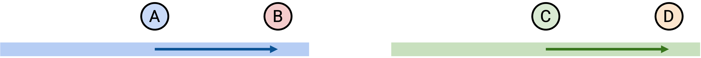
In this example, A and B want to talk, and C and D want to talk. A senses nothing, and starts transmitting to B. Notice that A’s signal propagates in all directions, not just toward B. Later, C senses nothing (since it’s out of A’s range), so it can start transmitting to D.
This strategy also works fine if the two pairs of devices are within range of each other.
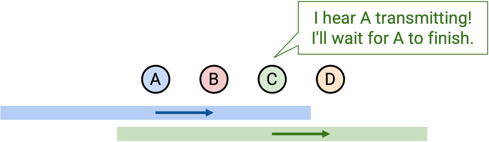
Again, A and B want to talk, and C and D want to talk. A senses nothing, and starts transmitting to B. Later, C senses a signal, since A is talking and C is within range of that signal. Therefore, C will wait until A is done, and only start transmitting to D afterward.
Sometimes, this strategy leads to problems.
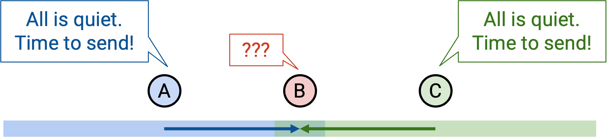
Suppose that A and C both want to talk to B. A senses nothing, and starts transmitting to B. Later, C senses nothing, because it’s out-of-range of A, so C also starts transmitting to B. There’s a collision at B!
This is called the hidden terminal problem. In this case, the two transmitters (A and C) were out of range of each other, so they could not sense that a transmission was happening.
Here’s another case where CSMA is problematic:
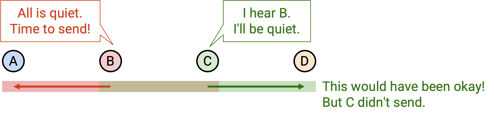
In this case, suppose that B wants to talk to A, and C wants to talk to D. First, B senses nothing and starts transmitting to A. Remember, B’s signal propagates in all directions, including to C. Now, C wants to talk to D, but senses B’s signal and stays quiet.
If you look carefully, B and C could have actually transmitted at the same time. It’s true that collisions would happen in the space between B and C, but the receivers (A and D) won’t sense any collisions.
This is called the exposed terminal problem. In this case, the two transmissions could have occurred at the same time, but instead, one transmission is prevented from happening because C is falsely detecting a collision.
MACA for Collision Avoidance
Instead of using CSMA, MACA (Multiple Access with Collision Avoidance is an approach to multiple access that will help us solve the hidden terminal problem.
The key problem with CSMA was, the sender was detecting collisions at the sender, but the real problem is collisions at the receiver. To solve this, we will have the receiver announce whether it detects any collisions.
Suppose A wants to send data to B. A successful data transfer involves a sequence of 3 steps:
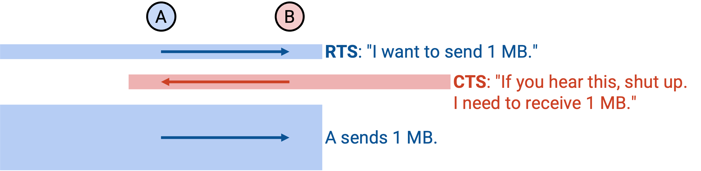
-
A transmits a Request To Send (RTS) packet with the length of the data. This is A saying: “I’d like to send k bits to B.”
-
B transmits a Clear To Send (CTS) packet with the length of the data. This tells A that it’s safe to send, and confirms that there are no collisions at the receiver. The CTS also warns everybody in B’s range: “I’m B, and I’m about to receive k bits, so please don’t talk during this time.”
-
A transmits the data, and B receives the data. The CTS warning ensures that everybody else in range of the receiver stays quiet during this time.
This protocol solves the hidden terminal problem. Remember, in the hidden terminal problem, A and C both sense quiet and start transmitting, causing a collision at B. With this protocol, if A sends an RTS, B will transmit a CTS, warning everybody in B’s range (including C) to be quiet.
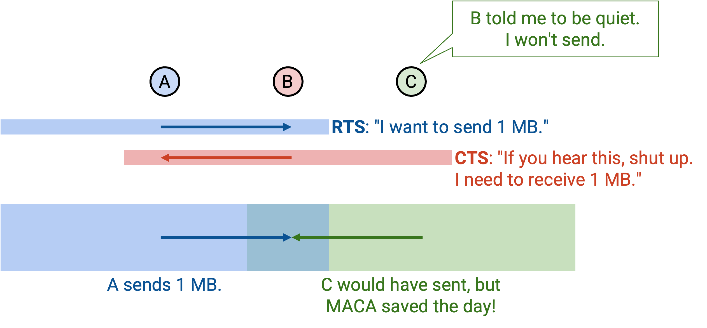
If you hear an RTS packet, this means you’re in range of the sender. The sender is about to listen for a CTS. Therefore, you need to be quiet and wait for one time slot, which is long enough so that you don’t clobber out the CTS at the sender with data of your own. In other words, you need to be quiet and let the sender receive a CTS.
After the RTS, if you then hear a CTS, that means you’re also in the range of the receiver, so you must also be quiet during the data transfer. If you don’t hear the CTS, that means that you’re out of range of the receiver, and you can transmit data yourself.
Under certain assumptions, this protocol solves the exposed terminal problem. Remember, in the exposed terminal problem, B is sending to A, and C is sending to D. With CSMA, C senses B’s signal and stays quiet, though it could have safely transmitted. With this protocol, if B sends an RTS, C will defer for one time slot (to avoid clobbering the CTS at B). Then, because C didn’t hear the CTS, this means that C is out of range of the receiver (A), so C can safely start transmitting to D.
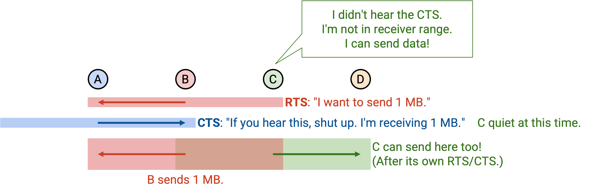
The assumption we make for this to work is, C must be able to hear the CTS from D. Remember, even though C is the sender, it must receive the CTS before it can start sending. However, C is actually hearing the data from B as well, so it might not be able to hear the CTS to start sending. The key problem here is: In CSMA, the sender only ever sends. But in MACA, the sender actually has to receive a CTS before it can start sending, and that CTS might be clobbered in the exposed terminal case.
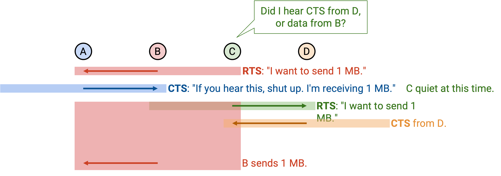
If we send an RTS, but we don’t hear a corresponding CTS, this means that we are not clear to send. There’s a collision at the receiver, maybe because the receiver is currently receiving data, or because the receiver gets two requests at the same time. If this happens, we apply binary exponential backoff (similar to CSMA/CD), and wait up to twice as long before sending another RTS.
In MACA, each device maintains a CW (Contention Window) value, which tells us how long after a collision we should wait before re-requesting. If we detect a collision (no CTS), we pick a random number between 0 and CW, and wait that long before re-requesting. The minimum value is 2 slots, and the maximum value is 64 slots, where one slot is the time it takes to transmit an RTS. On a successful RTS/CTS, we reset the contention window back to the minimum value of 2. On a failed RTS (no CTS), we double the contention window, clamped to avoid exceeding the maximum value of 64.
MACAW Feature: ACK (For Reliability)
MACAW (Multiple Access Collision Avoidance for Wireless) offers some improvements over the MACA protocol.
The first improvement is adding acknowledgements for reliability. As before, the sender transmits an RTS, and the receiver transmits a CTS, and the sender transmits data. Now, we have an extra step at the end, where the receiver transmits an ack.
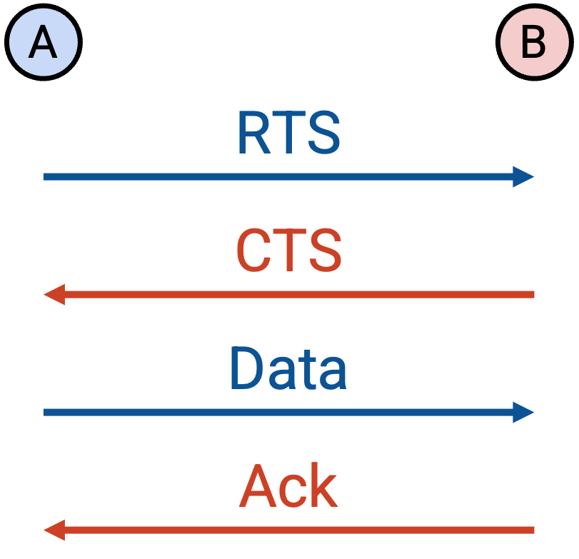
If the data is lost, then there won’t be an ack, and the sender will have to retry, starting over with a new RTS. If the data is correctly sent but the ack is lost, then the sender will retry with a new RTS, but the receiver can immediately reply with the ack instead of the CTS.
Why did we add acks? Remember, the end-to-end principle said that reliability must be implemented at the end hosts for correctness. However, in this case, we’re implementing reliability in the network, along a single link, solely in order to improve performance. If we didn’t implement reliability on the link, TCP would still guarantee correctness, but a lost packet would cause TCP to slow down significantly (recall, congestion window halves). By contrast, by implementing reliability on the link, we can recover from packet losses more efficiently.
MACAW Feature: Better Backoff (For Fairness)
The MACA protocol is unfair when two colliding hosts want to send data. In particular, winners tend to keep winning, while losers keep to keep losing.
Here’s an example of unfairness. Suppose A and B both have their windows set to 2, and they simultaneously attempt to reserve the channel. Let’s assume A wins, and B loses. Then A’s window stays at 2, while B’s window doubles to 4. This means that A probably gets to reserve the channel again sooner, and will probably win again. This also means that by the time B tries again, A has already captured the channel again, and B’s window doubles again to 8. This pattern continues, and A keeps re-capturing the channel quickly, while B keeps failing and waiting increasingly longer before trying (and failing) again.
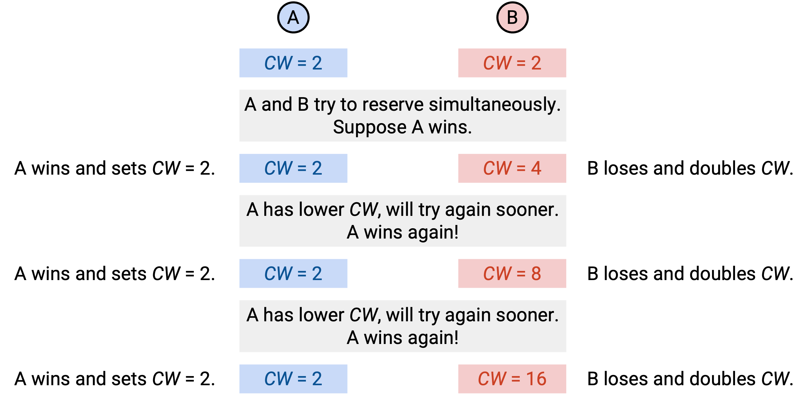
To solve this problem, instead of each device having its own CW, we’ll have everybody share the same CW. The packet header now contains a field for the CW value, and if you receive a packet, you set the CW to the value in the packet. Since everybody now has the same CW, the retry mechanism doesn’t favor any one device. Everybody picks a random value between 0 and CW and waits that long. (Note: We’re slightly simplifying here, but this is true if all devices are in range of each other.)
MACAW also changes the CW update rules to be more gentle. As before, the minimum value is 2 and the maximum value is 64. On a failed RTS (no CTS), we multiply CW by 1.5 (instead of doubling), and again clamp to avoid exceeding 64. On a successful RTS/CTS/DATA/ACK transmission, we decrease CW by 1 (instead of resetting all the way to 2). Note that on a successful RTS/CTS, but a failed ACK, the CW does not change. This approach is sometimes called Multiplicative Increase, Linear Decrease (MILD).
MACAW Feature: DS (For Exposed Terminals)
Recall our exposed terminal example from earlier, where B wants to communicate with A. B sends an RTS, A sends a CTS, and B starts transmitting data. At this point, C did not hear the CTS, which means C is out-of-range of the receiver and can safely transmit data. However, in order to transmit, C must hear the CTS. This might not happen, since C is also hearing B’s data, and there might be a collision between B’s data and D’s CTS.
MACAW concludes that in the exposed terminal case, B-to-A and C-to-D actually cannot send data simultaneously. Yes, we’re admitting defeat, and it turns out neither MACAW nor CSMA solves the exposed terminal problem.
This means that if we’re in the range of the other sender, we actually can’t send data (even if we aren’t in the range of the other receiver). To repeat, this is because we’ll be hearing the data from the other sender, which means we can’t hear the CTS we need to start sending.
To solve this problem, we add an extra Data Sending (DS) packet before the data. This is the sender warning everybody: I’m about to send k bits of data, so you need to be quiet during this time.
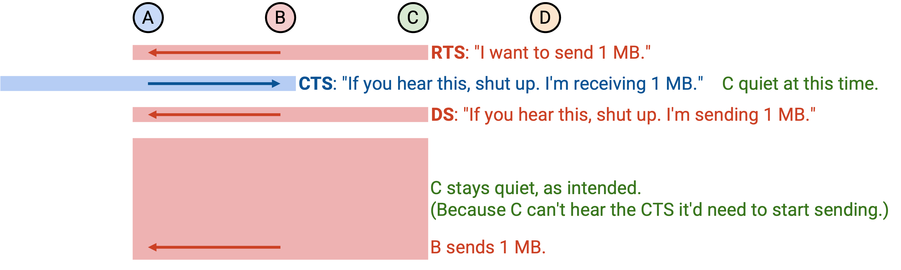
The protocol now has 5 steps:
-
Sender transmits RTS, requesting to transmit k bits of data.
-
Receiver transmits CTS, telling everyone in range: Be quiet, I’m receiving k bits of data.
-
Sender transmits DS, telling everyone in range: Be quiet, I’m sending k bits of data. (Others can’t send data, because my data will clobber the CTS you need to receive for your transmission.)
-
Sender transmits the data.
-
Receiver transmits the ack.
Note that the RTS and DS are not redundant. The RTS is a request that might not be granted (e.g. maybe no CTS). The DS confirms that the request is actually granted, and enforces that everyone in the sender’s range must be quiet.
MACAW Feature: DS (For Synchronization)
The DS has a second important purpose. Let’s revisit the exposed terminal again, remembering that MACAW accepts defeat and forces the two transmissions to happen separately.
Assume there’s no DS packet. Then, as before, B sends an RTS, A sends a CTS, and B starts transmitting data. C hears the RTS, and defers for one time slot (to avoid interrupting B). However, C does not hear the CTS. At this point, C is doomed to send a futile RTS, and will never hear the CTS (because it’s drowned out by the data from B). C will keep retrying and sending out futile RTS requests, but it has no idea when B will stop sending data.
By contrast, B knows exactly when it will stop sending data. This gives B a huge advantage in the next round of contention. When B is done sending data, it can immediately send out another request, and it will probably win and get to keep sending data. On the other hand, C has no idea when B will stop sending data, so it has to randomly guess when to send out another request. Most likely, C will guess a time and re-request while B is still sending data, so C will lose and the request won’t be granted (collision).
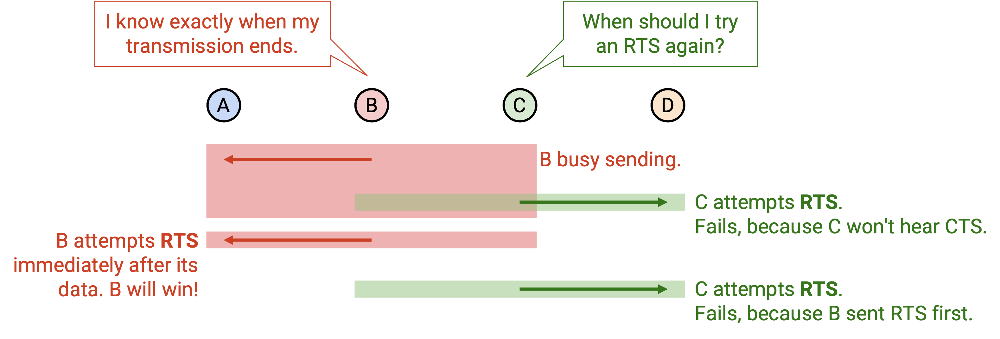
This lack of synchronization leads to unfairness. If I win, I’ll probably win again, because I know exactly when the next round of contention will happen (it’s when I’m done sending). If you lose, you’ll probably lose again, because you don’t know when the next round of contention will happen (you don’t know when I’m done). The contention time is usually a tiny sliver of time, since most of the time is spent sending data. I know exactly when that time is, and you don’t, so I’ll keep winning.
The DS packet solves this problem, because it allows the sender to tell everybody when the next round of contention occurs. Now, B is using the DS packet to tell everybody: I’m starting to send k bits. Not only does C now know to not send futile RTS requests, but it also knows when B will be done sending. This gives C a much fairer shot at winning the next round of contention.
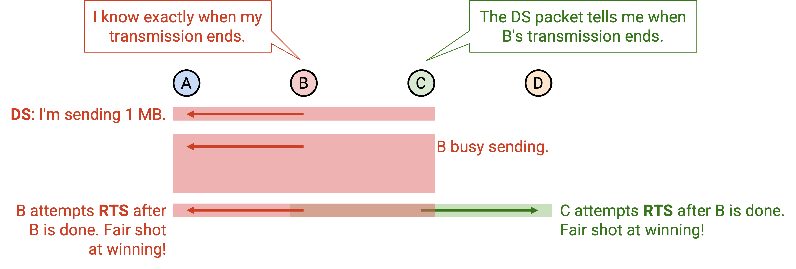
MACAW Feature: RRTS (For Synchronization)
There’s another case where synchronization is critical to ensure fairness. Suppose A wants to send to B, and D wants to send to C.
A transmits to B (A sends RTS, B sends CTS, A sends DS and sends data). C hears the CTS and must stay quiet while the data is sent. Now, D is clueless and doomed. D will send an RTS, and won’t hear a CTS because C is staying quiet. D will keep retrying at random times, and will keep failing, because it has no idea when A will stop sending data.
By contrast, A knows exactly when it will stop sending data. Just like before, this gives A a huge advantage in the next round of contention. A can immediately re-request and win. On the other hand, D has no idea when to re-request. The only way D will win is if it gets really lucky and sends the request immediately after A is done sending, but before A re-requests.
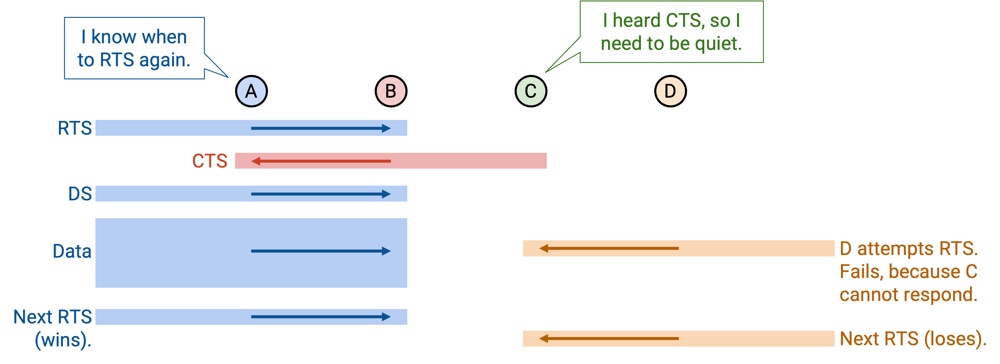
Notice that the DS packet doesn’t help us here, because the two senders, A and D, are out-of-range of each other. A will send a DS packet and announce when it’s sending data, but D won’t hear it, so D is still doomed to lose.
To solve this problem, we’ll let the receiver do the contending on behalf of the sender. D doesn’t know when to re-request, but C does, so let’s make C do the requesting instead.
When D sends the RTS, C learns that D wants to talk, but C must stay quiet until the next round of contention. Notice that C knows when the next round of contention occurs, because it will hear the ack from B. When the next round of contention occurs, C sends a new packet called a Request-for-RTS (RRTS). This immediately alerts D that the next round has begun, and allows D to immediately send an RTS. This gives D a much fairer shot at winning the contention round.
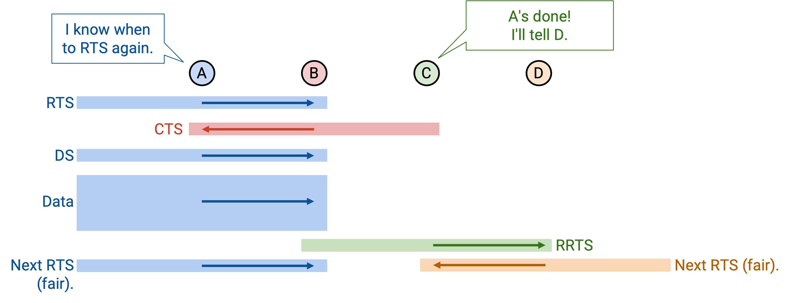
If you hear an RRTS, this means that someone in your range is trying to request, so you should be quiet for 2 time slots while they perform the RTS/CTS exchange.
In the example, if C sends out an RRTS, B hears this and stays quiet for two time slots, which allows D to send an RTS, and C to send a CTS. The CTS tells B to be quiet, and allows the D-to-C transmission to happen.
More generally, you should send an RRTS if you hear an RTS, but you’re not allowed to respond, because someone else has told you to be quiet.
DS and RRTS help with synchronization and ensure more fair contention rounds, but they don’t solve all our problems. Consider A sending to B, and C sending to D. Suppose C starts sending to D. At this point, if A sends an RTS, B can’t hear it because the RTS is getting drowned out by C’s transmissions. The only way A’s RTS will reach B is during the short gap in between C’s transmissions. Here, A is doomed to lose, because it has no idea when C will stop sending, while C knows exactly when it’s sending. Note that RRTS doesn’t save us here, because the RRTS is only sent if you hear an RTS, but B never even hears the RTS. B never learns that A wants to communicate, so B will never send an RRTS request on behalf of A. The original MACAW paper leaves this problem unsolved.